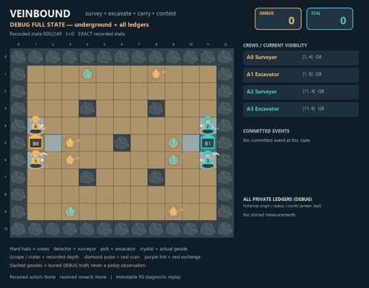
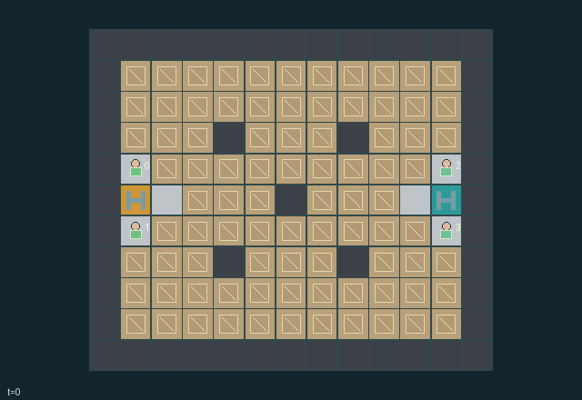

GI077 · Veinbound

Original recording scope: 全状态审阅视角 · Mode: 保存状态回放
Additional generated state replay (different trajectory / full-state debug)

Two rival two-person survey crews hunt eight buried geodes. A surveyor can measure counts of amber and teal deposits within a radius but cannot see their exact positions. An excavator opens soil faster. Private scan records can be exchanged only when teammates meet. Once exposed, a geode can be carried, deliberately handed off by dropping it, or knocked loose by a rival's shove. Banking preferred-colour geodes is worth more; the first team to reach eight points wins, with simultaneous finishes resolved from the same new state.
Identity and original contract
4 independently actionable roles; 15 discrete commands per role; 2196 native observation columns per role; original horizon 240 steps. Declared per-step reward range: -8 to 8. Observation regime: partially_observable.
Source SHA-256: 478a7d1b114ae3c5ad4dca6aefdf0f8e10d2ae15e0befeab9e0e4747979958e8
The objective, rewards, population, map and horizon remain original. A preview is not a success claim.
Objective and gameplay
Two rival two-person survey crews hunt eight buried geodes. A surveyor can measure counts of amber and teal deposits within a radius but cannot see their exact positions. An excavator opens soil faster. Private scan records can be exchanged only when teammates meet. Once exposed, a geode can be carried, deliberately handed off by dropping it, or knocked loose by a rival's shove. Banking preferred-colour geodes is worth more; the first team to reach eight points wins, with simultaneous finishes resolved from the same new state.
Several scan origins can constrain a hidden deposit more tightly than one count. Excavation changes later measurements because scans count only still-buried deposits, so timestamps and stale information matter. The surveyor can spend charge on information, while the excavator spends charge to open a suspected tile in one dig. A mistaken rendezvous or stale record can waste both travel and excavation effort. A teammate must physically approach to receive records; that meeting competes with carrying geodes back to bank and gathering new measurements. One agent can expose a deposit while an adjacent teammate picks it up in the same transition because excavation precedes handling. That interaction follows the declared state order rather than an invisible macro action. A dropped geode can be picked by a nearby teammate in the same transition, but simultaneous rival pickup requests cancel, leaving the contested object on the board. A shove can displace a carrier, force a real drop and cancel its pending bank/scan/dig action. Bracing, protected home approaches and shove cooldowns give counterplay. The two teams value colours differently, so visible cargo and public scores change the value of racing, intercepting, handing off or collecting an otherwise lower-value deposit.
- ROLE VIEW is the default. DEBUG FULL STATE explicitly reveals buried geodes and all private ledgers and is never a policy observation.
- Two surveyor/excavator teams move on the real map, survey underground counts, excavate, carry and compete for eight finite geodes.
- Buried locations/colours are invisible in every role view. Static terrain is public; current depth and other dynamic contents need the actual local view mask.
- A scan ring means a real scan occurred. Actual historical counts appear only in the holder's private records or after a legitimate adjacent exchange.
- Digging changes real depth; crystals appear only on actual exposure. Pickups, drops, forced drops and carriers use real object identity and positions.
- Apply all entity and event component masks before role-frame serialization. A bank event publishes its valid bank endpoints and points to all roles. Match either endpoint to public bank_xy[b] and read bank_team[b]: (1,5) is team 0; (11,5) is team 1. Hidden depositor and geode identities remain redacted.
- Shoves resolve after movement; a brace, protected base, invalid destination or simultaneous conflict can prevent them. Never fabricate a force-drop.
- Bank preferred colour for two points, other colour for one. Compare complete simultaneous scores; natural outcomes precede H240 unresolved truncation.
- Show the spatial board and actual mechanism events. Private numerical cards and public scores supplement gameplay.
- Use only committed event identities; an absorbing state freezes time and must not repeat animations.
- Pre-execution clarification: the original order applies facing before shoves. Committed turns are not rolled back; shoves cancel only still-pending operations. Use this fixed public order, not an outcome-selected rule.
Ending: After simultaneous deposits, score>=8 gives race ending; otherwise all eight banked ends the game. Compare complete new scores; ties allowed. Otherwise H240 is unresolved truncation.
What this game explores
Information, sensing & communication: Who knows a fact, when it was measured, and whether it was communicated are separate state variables. Test memory or communication using only the same role-visible evidence.
Complementary production & service: A useful outcome requires ordered stages, scarce equipment or another role's capability. Measure real completed products and resource circulation rather than counting intermediate actions as success.
Joint transport & shared access: Positions, load geometry, occupancy and persistent access constrain whose action can succeed next. Distinguish physical handoff, shared controls and simultaneous force from a cosmetic cooperation label.
Team opposition & interception: Cooperation within a team can coexist with opposition between teams. Preserve team membership, capture and possession rules, and report each team's outcomes instead of assuming a single shared return.
These are questions supported by rule structure, not observed learning effects.
Play it: operating walkthrough
crucibles play --game gi077Keep Python running and open its printed address. Select this game, set a seed and press Create session. The game itself is always English.
Assign a role range to Host with Assign / take over, or Assign all roles. Invite a second participant with Create player invitation, then assign a disjoint subset. Every original role is available.
For every owned role choose a legal command and press Queue. Arrow keys / WASD queue a declared directional action for the current role camera when available. Space or Advance one joint step advances everyone together. Non-directional games use the selectors.
Unqueued roles use the labelled untrained uniform-legal policy. Take over or release roles before the next step without resetting. Full-state debug is privileged and permanently logged; role cameras preserve permissions. Close the session to retain logs. Server restart does not restore sessions.
Complete command reference
IDs and English labels exactly match the manifest. Availability depends on role, resources, location and phase. An available action can still have no productive effect.
0·wait
1·step_north
2·step_east
3·step_south
4·step_west
5·turn_clockwise
6·dig_front
7·handle_front
8·bank
9·scan_near
10·scan_far
11·exchange_records
12·brace
13·shove_front
14·recharge
Roles and capability identifiers
These original role names describe capabilities, not interchangeable skins. Check each owned role's legal selector before planning handoffs.
agent_0·surveyor
agent_1·excavator
agent_2·surveyor
agent_3·excavator
Information and observation permissions
Terrain, base ownership geometry, team/role assignment, scoring rules, total geode count, team scores and total banked count are public. Buried coordinates and colours are engine-only hidden state. Ordinary local visibility never reveals a buried geode. Scan counts and history are private to their record holder. Teammates receive them only through a successful exchange; opponents never receive them. A role sees other agents, their facing/charge/stun/cooldown, surface geodes, carried geode colours and excavation depth only inside its current radius-4 view. No exact position, inventory, depth update, event endpoint or scan readout outside the permitted projection is supplied to an actor or its rendered view. There is no persistent terrain/object memory in the numeric observation other than the six scan records. Policy recurrence may remember past observations; the renderer may not replace unknown current cells with hidden truth. For the role renderer, active bank-event locations and deposited values are deliberately public; match the published endpoint to public bank_xy and read the same-index bank_team. Actor/geode identities keep their local masks. This presentation repair adds no training-observation field.
The GIF is full-state debug and may reveal hidden entities or private state. Train on obs[agent], not the picture, state tree or another role's private row. Field slices and visibility are in the original manifest.
Reinforcement-learning integration
import jax
from crucibles_jaxmarl import make
env = make("gi077")
key = jax.random.PRNGKey(0)
key, rk, ak, sk = jax.random.split(key, 4)
obs, state = jax.jit(env.reset)(rk)
actions = env.sample_actions(ak, state)
obs, state, rewards, dones, info = jax.jit(env.step_env)(sk, state, actions)
done = dones["__all__"]Observations are float32 vectors of width 2196; actions are scalar int32; masks have 15 entries. Supply all 4 roles each transition. Masked sampling is an engineering reference, not a trained learner.
step_env retains terminal data without reset. step performs outer autoreset and keeps terminal data in info["raw_state"] and info["raw_observation"]. Use dones["__all__"] for episode boundaries; separate completion, failure and time limit in analysis.
JIT or vmap equal identities and shapes. Split independent reset, policy and transition keys. Group different shapes explicitly; do not shrink the population or horizon. Host rendering stays outside training.
Training questions and fair evaluation
Define valid completion from the objective before fitting. Preserve original rewards and also report real deliveries/services, losses, resource state, unresolved episodes and per-role returns. Animation is not a reward signal.
Who knows a fact, when it was measured, and whether it was communicated are separate state variables. Test memory or communication using only the same role-visible evidence.
A useful outcome requires ordered stages, scarce equipment or another role's capability. Measure real completed products and resource circulation rather than counting intermediate actions as success.
Positions, load geometry, occupancy and persistent access constrain whose action can succeed next. Distinguish physical handoff, shared controls and simultaneous force from a cosmetic cooperation label.
Cooperation within a team can coexist with opposition between teams. Preserve team membership, capture and possession rules, and report each team's outcomes instead of assuming a single shared return.
Compare memory, communication or centralized critics under matched actor information. Declare critic access; keep actor inputs role-filtered. Match partner/opponent distributions, masks, compute and checkpoint selection. Final tests never enter fitting or selection.
Independent training runs or source-pairing blocks are inferential units; episodes from one policy are not independent training replications. Save hashes, keys, versions, device, time and cost. Negative, zero, failed and indeterminate outcomes are valid. No trained checkpoint or target score is supplied.
Classification and evidence
Overlapping editorial labels are reading aids, not proof of novelty, difficulty, strategic equivalence or learning effects.
- Information, sensing & communication
- Evidence
manifest.task.objective: Two rival two-person survey crews hunt eight buried geodes. A surveyor can measure counts of amber and teal deposits within a radius but cannot see their exact positions. An excavator opens soil faster. Private scan records can be exchanged only when teammates meet. Once exposed, a geode can be carried, deliberately handed off by dropping it, or knocked loose by a rival's shove. Banking preferred-colour geodes is worth more; the first team to reach eight points wins, with simultaneous finishes resolved from the same new state.
- Evidence
manifest.task.interaction: Several scan origins can constrain a hidden deposit more tightly than one count. Excavation changes later measurements because scans count only still-buried deposits, so timestamps and stale information matter. The surveyor can spend charge on information, while the excavator spends charge to open a suspected tile in one dig. A mistaken rendezvous or stale record can waste both travel and excavation effort. A teammate must physically approach to receive records; that meeting competes with carrying geodes back to bank and gathering new measurements. One agent can expose a deposit while an adjacent teammate picks it up in the same transition because excavation precedes handling. That interaction follows the declared state order rather than an invisible macro action. A dropped geode can be picked by a nearby teammate in the same transition, but simultaneous rival pickup requests cancel, leaving the contested object on the board. A shove can displace a carrier, force a real drop and cancel its pending bank/scan/dig action. Bracing, protected home approaches and shove cooldowns give counterplay. The two teams value colours differently, so visible cargo and public scores change the value of racing, intercepting, handing off or collecting an otherwise lower-value deposit.
- Evidence
manifest.task.observation_access: Terrain, base ownership geometry, team/role assignment, scoring rules, total geode count, team scores and total banked count are public. Buried coordinates and colours are engine-only hidden state. Ordinary local visibility never reveals a buried geode. Scan counts and history are private to their record holder. Teammates receive them only through a successful exchange; opponents never receive them. A role sees other agents, their facing/charge/stun/cooldown, surface geodes, carried geode colours and excavation depth only inside its current radius-4 view. No exact position, inventory, depth update, event endpoint or scan readout outside the permitted projection is supplied to an actor or its rendered view. There is no persistent terrain/object memory in the numeric observation other than the six scan records. Policy recurrence may remember past observations; the renderer may not replace unknown current cells with hidden truth. For the role renderer, active bank-event locations and deposited values are deliberately public; match the published endpoint to public bank_xy and read the same-index bank_team. Actor/geode identities keep their local masks. This presentation repair adds no training-observation field.
- Complementary production & service
- Evidence
manifest.task.objective: Two rival two-person survey crews hunt eight buried geodes. A surveyor can measure counts of amber and teal deposits within a radius but cannot see their exact positions. An excavator opens soil faster. Private scan records can be exchanged only when teammates meet. Once exposed, a geode can be carried, deliberately handed off by dropping it, or knocked loose by a rival's shove. Banking preferred-colour geodes is worth more; the first team to reach eight points wins, with simultaneous finishes resolved from the same new state.
- Evidence
manifest.task.interaction: Several scan origins can constrain a hidden deposit more tightly than one count. Excavation changes later measurements because scans count only still-buried deposits, so timestamps and stale information matter. The surveyor can spend charge on information, while the excavator spends charge to open a suspected tile in one dig. A mistaken rendezvous or stale record can waste both travel and excavation effort. A teammate must physically approach to receive records; that meeting competes with carrying geodes back to bank and gathering new measurements. One agent can expose a deposit while an adjacent teammate picks it up in the same transition because excavation precedes handling. That interaction follows the declared state order rather than an invisible macro action. A dropped geode can be picked by a nearby teammate in the same transition, but simultaneous rival pickup requests cancel, leaving the contested object on the board. A shove can displace a carrier, force a real drop and cancel its pending bank/scan/dig action. Bracing, protected home approaches and shove cooldowns give counterplay. The two teams value colours differently, so visible cargo and public scores change the value of racing, intercepting, handing off or collecting an otherwise lower-value deposit.
- Evidence
manifest.task.observation_access: Terrain, base ownership geometry, team/role assignment, scoring rules, total geode count, team scores and total banked count are public. Buried coordinates and colours are engine-only hidden state. Ordinary local visibility never reveals a buried geode. Scan counts and history are private to their record holder. Teammates receive them only through a successful exchange; opponents never receive them. A role sees other agents, their facing/charge/stun/cooldown, surface geodes, carried geode colours and excavation depth only inside its current radius-4 view. No exact position, inventory, depth update, event endpoint or scan readout outside the permitted projection is supplied to an actor or its rendered view. There is no persistent terrain/object memory in the numeric observation other than the six scan records. Policy recurrence may remember past observations; the renderer may not replace unknown current cells with hidden truth. For the role renderer, active bank-event locations and deposited values are deliberately public; match the published endpoint to public bank_xy and read the same-index bank_team. Actor/geode identities keep their local masks. This presentation repair adds no training-observation field.
- Joint transport & shared access
- Evidence
manifest.task.objective: Two rival two-person survey crews hunt eight buried geodes. A surveyor can measure counts of amber and teal deposits within a radius but cannot see their exact positions. An excavator opens soil faster. Private scan records can be exchanged only when teammates meet. Once exposed, a geode can be carried, deliberately handed off by dropping it, or knocked loose by a rival's shove. Banking preferred-colour geodes is worth more; the first team to reach eight points wins, with simultaneous finishes resolved from the same new state.
- Evidence
manifest.task.interaction: Several scan origins can constrain a hidden deposit more tightly than one count. Excavation changes later measurements because scans count only still-buried deposits, so timestamps and stale information matter. The surveyor can spend charge on information, while the excavator spends charge to open a suspected tile in one dig. A mistaken rendezvous or stale record can waste both travel and excavation effort. A teammate must physically approach to receive records; that meeting competes with carrying geodes back to bank and gathering new measurements. One agent can expose a deposit while an adjacent teammate picks it up in the same transition because excavation precedes handling. That interaction follows the declared state order rather than an invisible macro action. A dropped geode can be picked by a nearby teammate in the same transition, but simultaneous rival pickup requests cancel, leaving the contested object on the board. A shove can displace a carrier, force a real drop and cancel its pending bank/scan/dig action. Bracing, protected home approaches and shove cooldowns give counterplay. The two teams value colours differently, so visible cargo and public scores change the value of racing, intercepting, handing off or collecting an otherwise lower-value deposit.
- Evidence
manifest.task.observation_access: Terrain, base ownership geometry, team/role assignment, scoring rules, total geode count, team scores and total banked count are public. Buried coordinates and colours are engine-only hidden state. Ordinary local visibility never reveals a buried geode. Scan counts and history are private to their record holder. Teammates receive them only through a successful exchange; opponents never receive them. A role sees other agents, their facing/charge/stun/cooldown, surface geodes, carried geode colours and excavation depth only inside its current radius-4 view. No exact position, inventory, depth update, event endpoint or scan readout outside the permitted projection is supplied to an actor or its rendered view. There is no persistent terrain/object memory in the numeric observation other than the six scan records. Policy recurrence may remember past observations; the renderer may not replace unknown current cells with hidden truth. For the role renderer, active bank-event locations and deposited values are deliberately public; match the published endpoint to public bank_xy and read the same-index bank_team. Actor/geode identities keep their local masks. This presentation repair adds no training-observation field.
- Team opposition & interception
- Evidence
manifest.task.objective: Two rival two-person survey crews hunt eight buried geodes. A surveyor can measure counts of amber and teal deposits within a radius but cannot see their exact positions. An excavator opens soil faster. Private scan records can be exchanged only when teammates meet. Once exposed, a geode can be carried, deliberately handed off by dropping it, or knocked loose by a rival's shove. Banking preferred-colour geodes is worth more; the first team to reach eight points wins, with simultaneous finishes resolved from the same new state.
- Evidence
manifest.task.interaction: Several scan origins can constrain a hidden deposit more tightly than one count. Excavation changes later measurements because scans count only still-buried deposits, so timestamps and stale information matter. The surveyor can spend charge on information, while the excavator spends charge to open a suspected tile in one dig. A mistaken rendezvous or stale record can waste both travel and excavation effort. A teammate must physically approach to receive records; that meeting competes with carrying geodes back to bank and gathering new measurements. One agent can expose a deposit while an adjacent teammate picks it up in the same transition because excavation precedes handling. That interaction follows the declared state order rather than an invisible macro action. A dropped geode can be picked by a nearby teammate in the same transition, but simultaneous rival pickup requests cancel, leaving the contested object on the board. A shove can displace a carrier, force a real drop and cancel its pending bank/scan/dig action. Bracing, protected home approaches and shove cooldowns give counterplay. The two teams value colours differently, so visible cargo and public scores change the value of racing, intercepting, handing off or collecting an otherwise lower-value deposit.
- Evidence
manifest.task.observation_access: Terrain, base ownership geometry, team/role assignment, scoring rules, total geode count, team scores and total banked count are public. Buried coordinates and colours are engine-only hidden state. Ordinary local visibility never reveals a buried geode. Scan counts and history are private to their record holder. Teammates receive them only through a successful exchange; opponents never receive them. A role sees other agents, their facing/charge/stun/cooldown, surface geodes, carried geode colours and excavation depth only inside its current radius-4 view. No exact position, inventory, depth update, event endpoint or scan readout outside the permitted projection is supplied to an actor or its rendered view. There is no persistent terrain/object memory in the numeric observation other than the six scan records. Policy recurrence may remember past observations; the renderer may not replace unknown current cells with hidden truth. For the role renderer, active bank-event locations and deposited values are deliberately public; match the published endpoint to public bank_xy and read the same-index bank_team. Actor/geode identities keep their local masks. This presentation repair adds no training-observation field.
Source, receipts and preview limits
The additional generated state GIF replays saved untrained legal actions through the original kernel. At most 25 actual endpoints include initial and terminal state; no invented interpolation. It is full-state debug, not the role observation. Where an original scene preview exists, it is displayed first with its own recorded information scope. The two recordings may use different trajectories and views.
Original source, observation slices, manifest and mechanism
Native receipt · Presentation receipt
Engineering passes do not establish learning. Nonzero floating differences remain recorded and undetermined; no new tolerance was introduced. Human scores remain unverified.